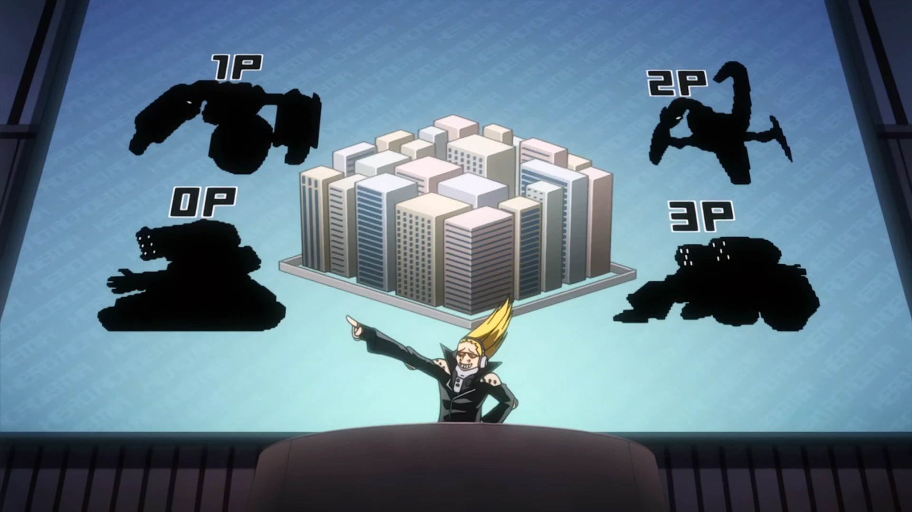
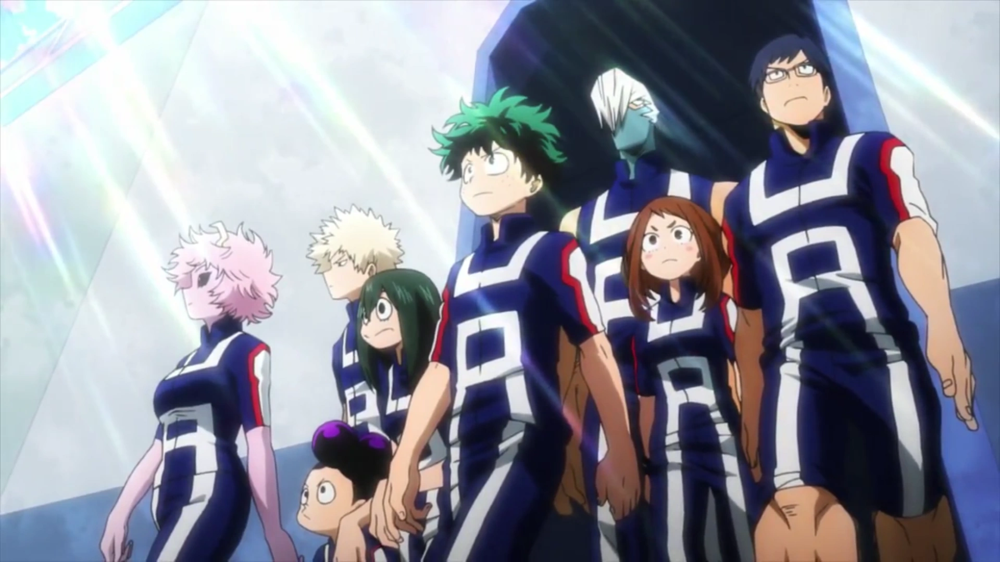

The UA High School Entrance Exam is a challenging and rigorous assessment designed to identify individuals
with the potential to become outstanding heroes.
Testing Quirk Abilities:
The entrance exam evaluates candidates' Quirks, unique superpowers that individuals possess in the My Hero
Academia universe. The examination assesses the candidates' understanding, control, and strategic application
of their Quirks.
Practical and Theoretical Components:
The exam consists of both practical and theoretical components. The practical part typically involves facing
simulated villain attacks or rescue scenarios where candidates must demonstrate their ability to think on
their feet and apply their Quirks effectively.
Problem-Solving Skills:
Candidates are evaluated on their problem-solving skills, quick decision-making, and adaptability to
unforeseen circumstances. This reflects the real-world challenges that heroes face daily.
Scoring System:
The exam uses a scoring system to objectively measure the candidates' performance. Points are awarded based
on the successful completion of tasks, the efficiency of Quirk usage, and the ability to achieve specific
objectives.
Observation of Character Traits:
U.A. High School is not just looking for raw power; the entrance exam also assesses the candidates'
character traits, such as courage, determination, and a sense of justice. These qualities are vital for
individuals aspiring to become heroes.
Competitive Nature:
The entrance exam is highly competitive, with a large number of candidates vying for limited spots at
U.A. High School. This competitive element reflects the intensity of the hero profession and helps
identify those who can thrive under pressure.
Influence on Future Hero Career:
Success in the entrance exam is a significant milestone for candidates, as it opens the door to the
prestigious U.A. High School. The education and training received at U.A. are foundational for future hero
careers.
In summary, the UA High School Entrance Exam is a comprehensive assessment that evaluates candidates'
Quirk abilities, problem-solving skills, and character traits. It serves as a crucial step in identifying
individuals with the potential to excel in the challenging and dynamic world of heroism. Successfully
passing the entrance exam marks the beginning of an exciting journey toward becoming a top-tier hero at UA
High School.

The biggest event of all year is The UA High School Sports Festival!
The Sports Festival is a thrilling and iconic event that showcases the incredible talents and abilities
of
our students.
Celebration of Heroic Abilities:
The Sports Festival is a grand celebration of the diverse and exceptional Quirks possessed by our
students.
It provides a unique platform for them to demonstrate their skills, creativity, and strategic thinking in
a
competitive yet friendly environment.
Showcasing Teamwork and Strategy:
Beyond individual prowess, the Sports Festival emphasizes the importance of teamwork and strategic
collaboration. Students engage in team-based competitions, fostering a sense of unity and camaraderie as
they
work together to achieve common goals.
Interaction with Pro Heroes:
The Sports Festival attracts the attention of prominent Pro Heroes, who often attend as spectators or
even
participate in special events. This provides students with the opportunity to interact with and learn from
real-world heroes, adding a layer of inspiration and motivation to the festivities.
Scouting Potential Heroes:
The Sports Festival serves as a scouting ground for agencies and organizations seeking to identify
promising
talent. Representatives from hero agencies attend the event, keeping an eye out for students who exhibit
exceptional skills, leadership qualities, and potential for future hero work.
Excitement and Entertainment:
The Sports Festival is a spectacle filled with excitement, drama, and intense competition. Spectators,
including fellow students, faculty, and sometimes even the public, witness breathtaking displays of Quirk
abilities and strategic brilliance, creating an electrifying atmosphere.
Promotion of Healthy Competition:
While the Sports Festival is a competitive event, it promotes healthy competition and sportsmanship.
Students learn valuable lessons about resilience, adaptability, and the importance of both victory and
defeat
in the journey of becoming a hero.
In summary, the UA High School Sports Festival is not only a showcase of incredible abilities but also a
multifaceted event that promotes teamwork, interaction with Pro Heroes, scouting opportunities,
entertainment,
and the development of valuable life skills. Participating in or attending the Sports Festival at UA is a
memorable and enriching experience that contributes to the holistic growth of our students and sets the
stage
for their future hero careers.